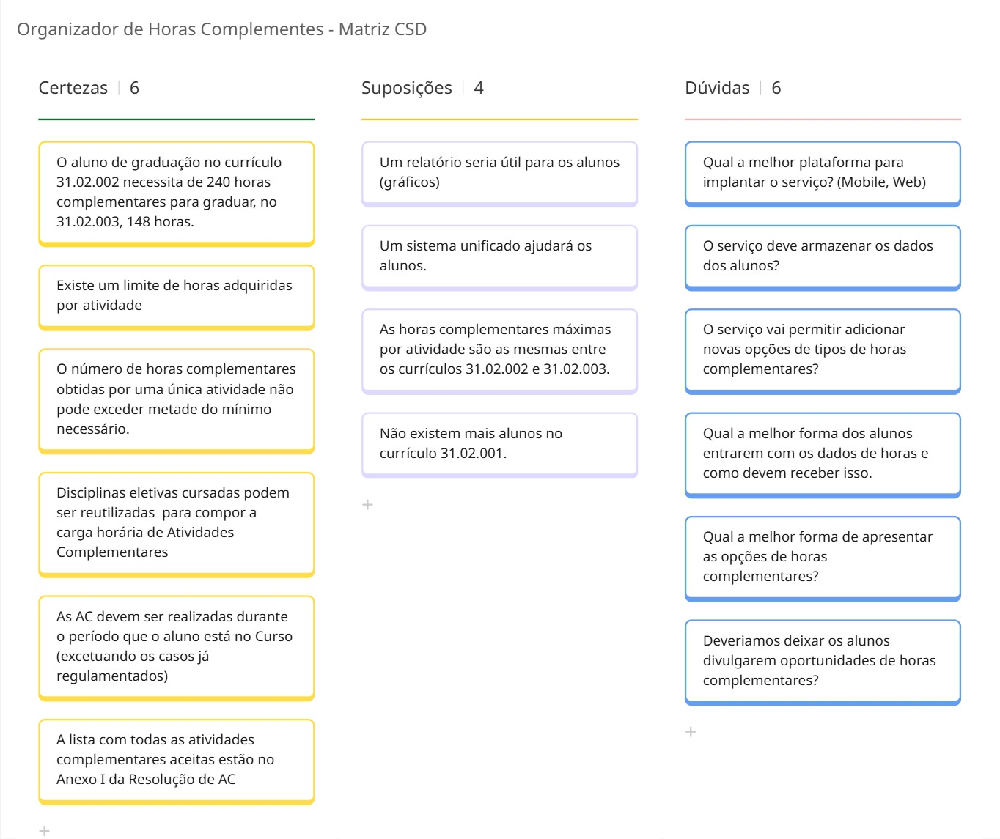
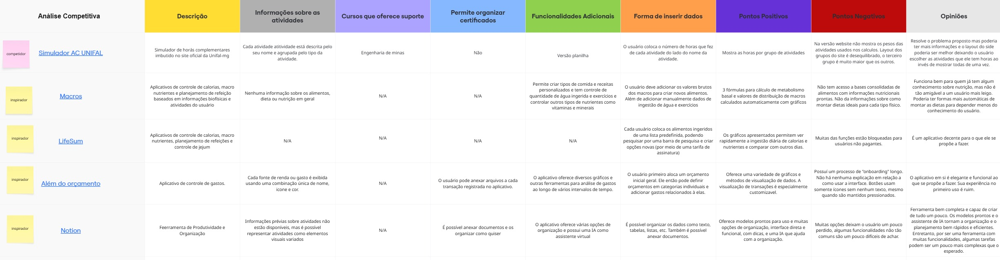

Definição da Design Challenge: HMW
Pergunta:
Como nós podemos ajudar alunos da graduação do IC a acompanhar o seu progresso de horas complementares de forma eficiente e organizada?
- A pergunta é focada no impacto principal?
Sim. Ela está centrada em resolver um problema real e específico: a dificuldade dos alunos em acompanhar o progresso de horas complementares, com foco em eficiência e organização. - A pergunta permite uma variedade de soluções?
Sim. É aberta o suficiente para permitir diversas abordagens como apps, planilhas, integrações com sistemas institucionais, gamificação, entre outras. - A pergunta leva em conta contexto e limitações?
Parcialmente. Menciona o público (alunos do IC), mas não explicita limitações como variabilidade das regras, desconhecimento das normas, ou restrições tecnológicas. Pode ser refinada para refletir melhor esse contexto.
Desk Research (Matriz CSD)
Análise Competitiva / Comparativa / Inspiradora
Questionário com Usuários
Resultados principais com visualização gráfica:
Qual sua principal dificuldade considerando todo o processo de organização e envio dos certificados?
- Não sei para onde tenho que envia-los e quantas horas cada certificado pode me dar.
- Não é muito intuitivo, muito menos incentivado durante os primeiros períodos de curso. Depois se torna uma correria
- A impossibilidade de enviar os certificados e contabilizar as horas de atividades complementares antes do último período...
- As vezes tem certificados que não ficam disponíveis
- Tudo é um tanto abstrato.
- Como que devem ser separados e enviados os comprovantes.
- Acho difícil encontrar as regras em relação às horas
- A emissão de alguns certificados demorarem demais...
- Ter que salvar tudo antes para enviar de uma só vez ao final do curso...
- Ter que enviar os certificados apenas ao final do curso...
- Falta de comunicação e integração no site da UFF.
- Só fiquei ciente das regras beeem depois de ingressar
- Salvar
- Poderiam ser feitos por período...
- Acho que seria mais fácil poder ir enviando desde o começo...
- Guardar os certificados
- Falta de orientação.
- Conseguir os certificados
- Não encontro informações sobre quando devo enviar os certificados...
- 1. conseguir os certificados e 2. saber para o que/quanto eles contam
- Obter informações sobre as horas complementares e inscrição
- Nenhuma
- Acho que deveria ter uma página do id uff só para isso
- O fato de que tem que guardar tudo para só no final saber quantas horas vou ganhar de fato
- Justamente saber quais tem e quais não tem disponíveis ou próximos de ocorrer.
- Encontrar todas as informações necessárias em um único veículo de informação...
- Estou me formando agora, e a parte mais difícil foi ir atrás do certificado...
- Falta de uma ferramenta institucional que seja prática e funcional.
- Não sei exatamente como funciona
- Saber o quanto cada atividade vale em horas complementares
- Não faço ideia de como funciona
- Que eu não posso enviar "parcelado"...
- Saber quais horas contam, o limite de cada categoria e como conseguir as que não são complementares
- Forma de contabilizar e armazenar os certificados
- Acho que manter um acompanhamento de tudo...
- Calcular quantas horas tenho/faltam. Devia estar na plataforma da UFF
- A não-existência de uma plataforma de atualização automática...
- Acho que poderia ter uma forma de contabilizar as horas ao longo do curso...
- Ainda não tive.
- Sempre achei confuso o "quando posso pedir" os certificados e a quem perguntar para consegui-los.
- O fato de não poder enviar ao longo do curso...
Técnica Qualitativa
Explique a técnica utilizada (ex: entrevista em profundidade, card sorting, etc.) e os principais achados qualitativos.